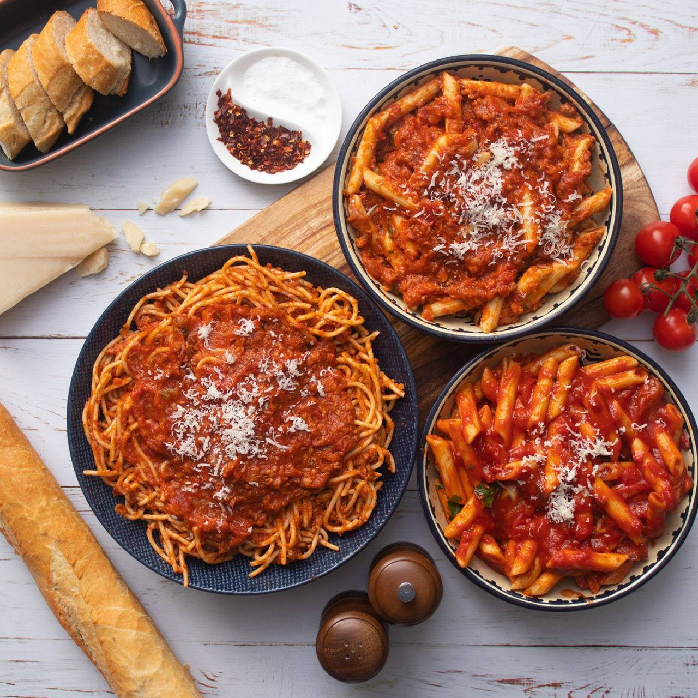
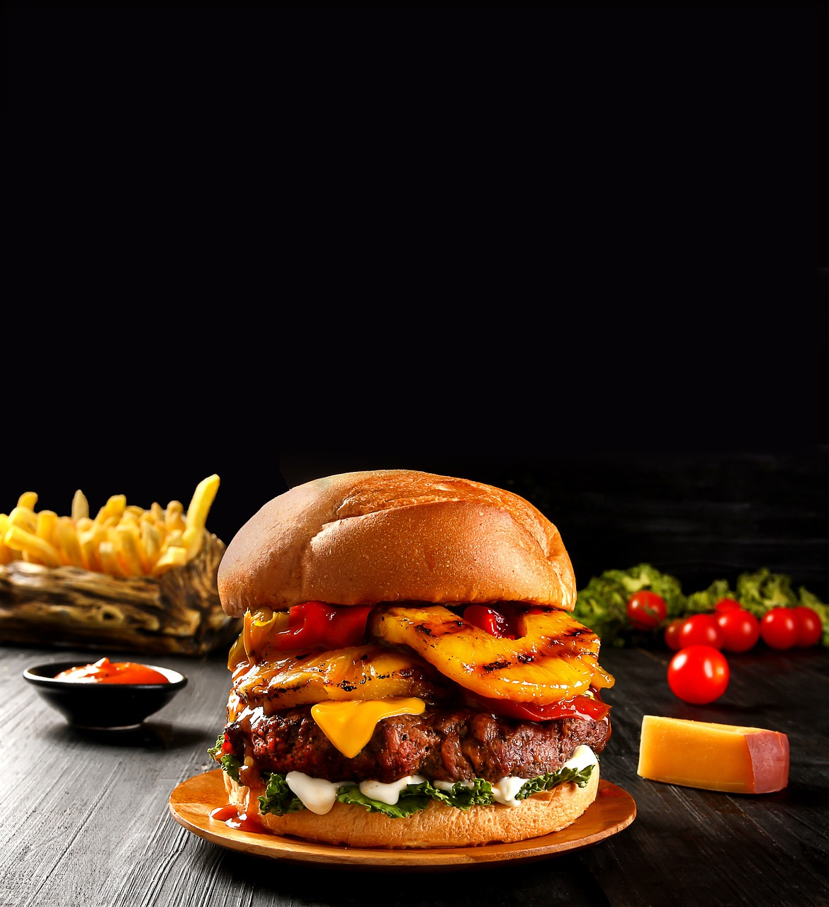

Pizza is one of the most popular foods in the world. It’s based on a simple concept: a flatbread with toppings baked at high temperatures and eaten without utensils. The convenience and variety of topping choices make pizza a quick and easy meal.
Favourite Foods


Pasta is a staple food in Italian cuisine and is loved by people all around the world. It is a versatile dish that can be prepared in various ways, making it suitable for different tastes and preferences. Whether it’s spaghetti, macaroni, fusilli, or any other shape, pasta is a delicious and satisfying food that has a long history and a significant cultural impact.

A food dish that combines beef with a variety of other ingredients, such as potatoes, vegetables, herbs, spices, and broth to create a savory dish, rich in flavor and often served as the main dish. There are many different versions of beef stew made in various countries from the ingredients that are readily available.

A burger is a type of sandwich typically made of a cooked patty of ground meat or vegetables, placed inside a sliced bun. It is often garnished with various condiments, cheese, lettuce, tomatoes, onions and pickles. It is a popular form of fast food but can also be made at home. The most common type of burger is a beef hamburger but there are also variants like chicken, lamb, fish, and veggie burgers for those following vegetarian or vegan diets.